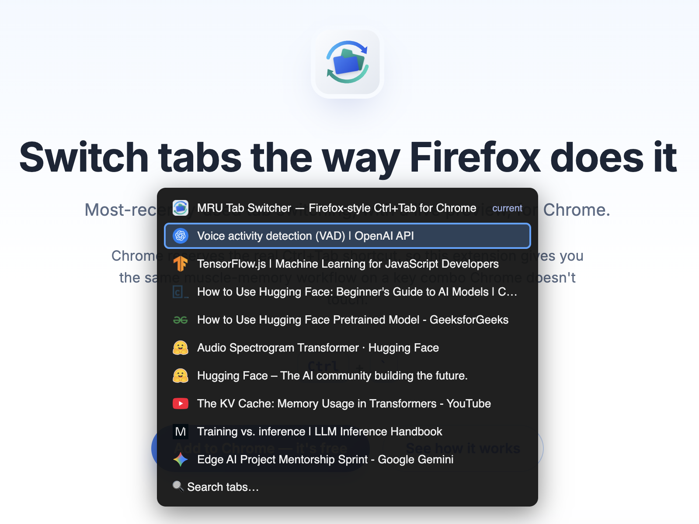
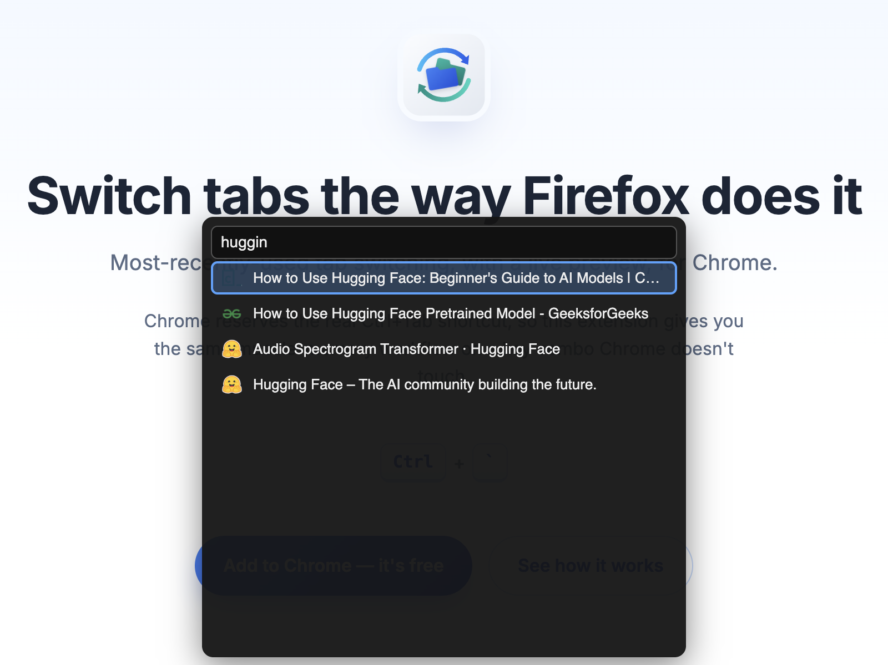

Firefox had it better: You could get back where you were with Ctrl+Tab.
MRU tab switcher brings similar functionality to Brave and Chrome. Open multiple links, and quickly switch between them, just use:
Ctrl + `
Tap Ctrl+` to instantly jump to your previous tab. Tap again to toggle right back.
Keep Ctrl held and tap ` (or use ↑/↓) to cycle a compact overlay of recent tabs before switching.
Can't find it in the recent list? Search every open tab by title without leaving the keyboard.

